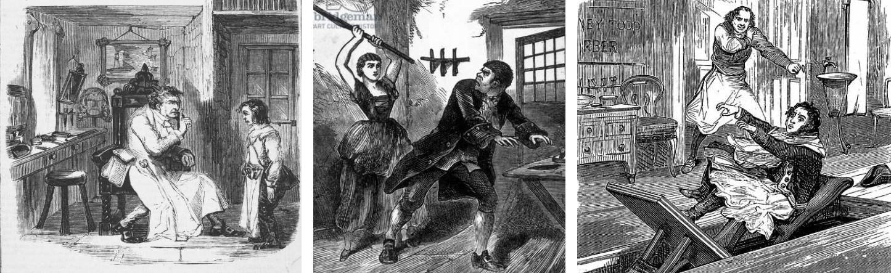

Sweeney Todd, pseudonimo di Benjamin Barker, altrimenti conosciuto come il “barbiere demoniaco di Fleet Street”, è un personaggio immaginario ed uno dei primi esempi di serial killer nella letteratura.
Storia
Egli nasce in una famiglia poverissima il 16 ottobre del 1756, all’85 di Brick Lane a Londra. I suoi genitori sono violenti e alcolizzati con lui. Rimasto orfano appena adolescente, viene condannato a cinque anni di carcere per aver rubato un orologio da taschino. Qui diventa apprendista di un barbiere, che gli insegna il mestiere e come ripulire le tasche dei clienti. In questo periodo sperimenterà il suo primo omicidio, tramite taglio alla gola, che gli farà apprezzare un piacere perverso.
Una volta scontata la pena, Sweeney è un giovanotto di diciannove anni e il suo sogno è quello di aprire una bottega di barbiere. All’inizio si arrangia a lavorare per strada e poi, coi soldi che guadagna, apre la tanto desiderata bottega nella zona di Fleet Street.
Sweeney Todd e con la scusa di una rasatura a basso prezzo attira clienti. E sarà proprio il suo piccolo salone lo scenario degli efferati delitti che vedranno parecchie sparizioni di persone
Sweeney ha organizzato tutto e ha munito il piccolo locale di una botola sotterranea; aveva scavato un buco in precedenza e, a copertura della botola, aveva collocato il sedile da barbiere. Uno sbocco facile e sicuro per sbarazzarsi dei corpi. Facile e congeniale visto che sotto la bottega c’è direttamente la fognatura.

Sweeney Todd in azione…
Modus operandi
il cliente arriva intenzionato a farsi radere, Sweeney fa finta di adempiere al suo dovere applicando la schiuma da barba e affilando il rasoio. Dopo un primo passaggio di lama sulla pelle, però, ecco che taglia la gola al malcapitato di turno. Dopo aver sgozzato la vittima gli basta premere col piede un pedale il cui meccanismo ribalta il sedile e fa scivolare di sotto il cadavere. Il sistema funziona in modo industriale.
Sweeney però non è solo nella sua “impresa” criminale, ma avrà come complice Margery Lovett, la vicina panettiera, aiutando il barbiere non solo a sbarazzarsi di ciò che resta dei cadaveri, portandoli sotto la chiesa di St. Dunstan, ma prima apprestandosi a scarnificarli e a usare parte delle loro carni per i suoi apprezzati “pasticcini di vitello”. I due arrivano a uccidere centosessanta persone.
Le indagini
L’ispettore Richard Blunt, del dipartimento della Salute londinese, è oberato dalle denunce da parte di comuni cittadini che frequentano St. Dunstan per un odore nauseabondo che proviene dal pavimento della chiesa. Decide di far partire i controlli. Le ispezioni sono a tappeto e l’intero quartiere viene messo sottosopra.
Alla fine vengono controllati anche i cunicoli sottostanti la chiesa e, grazie alla rete fognaria che collega tutta la città, si risale all’origine del tanfo fino ad arrivare sotto la bottega del colpevole. Le prove sono schiaccianti contro Sweeney Todd e l’ispettore riesce a collegare la sparizione delle vittime anche a Mrs. Lovett. Ulteriore prova dei loro delitti è il ritrovamento nella bottega di alcuni preziosi che le vittime avevano con loro al momento della scomparsa.
Nel 1801 inizia il processo a carico dell’assassino e della sua complice. Margery Lovett, pochi mesi dopo il processo, sicura di esser condannata a morte, si avvelena nella sua cella. Aveva confessato tutti i suoi crimini. Sweeney Todd viene invece impiccato il 25 gennaio del 1802.